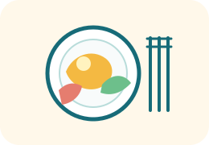

A
Une pomme peut donner plusieurs aliments transformés
Sélectionne les trois exemples donnés dans la séance.
Trois étapes pour distinguer les produits agricoles, retrouver les aliments transformés qui en sont issus et comprendre qu’une recette peut avoir plusieurs origines.
ÉTAPE 1
Touche un aliment, puis touche la bonne catégorie. Si tu t’es trompé, touche simplement l’aliment déjà placé pour le retirer et le remettre dans « À classer ».

ÉTAPE 2
Touche d’abord un produit agricole, puis l’aliment transformé qui peut être fabriqué à partir de lui.
ÉTAPE 3
Sélectionne toutes les bonnes réponses dans chaque défi, puis vérifie l’ensemble de l’étape.
Sélectionne les trois exemples donnés dans la séance.
Sélectionne les deux produits cités dans la séance.
Sélectionne les actions indiquées dans la trace écrite pour fabriquer des aliments transformés.
MISSION RÉUSSIE
Tu sais distinguer un produit agricole d’un aliment transformé et retrouver l’origine de plusieurs aliments.